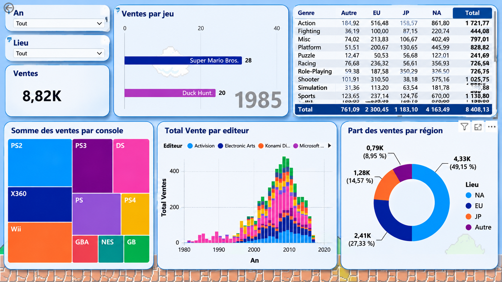

01 — Analyse des ventes de jeux vidéo
Projet universitaire réalisé avec Power BI. Création d'un tableau de bord interactif permettant d'analyser les ventes de jeux vidéo selon les consoles, les éditeurs, les genres et les régions.
Power BI Data Visualisation Analyse de données
02 — Modélisation des données : schéma en étoile
Travail réalisé en stage autour de la structuration des données et de leur modélisation pour faciliter l'analyse et le reporting.
Modélisation Power BI
Visuel du schéma en étoile à ajouter
03 — Conception de tableaux de bord
Présentation d'un exemple de tableau de bord illustrant l'organisation des indicateurs de performance et la visualisation des données, sans informations confidentielles.
KPI Reporting Power BI
Exemple de tableau de bord à ajouter